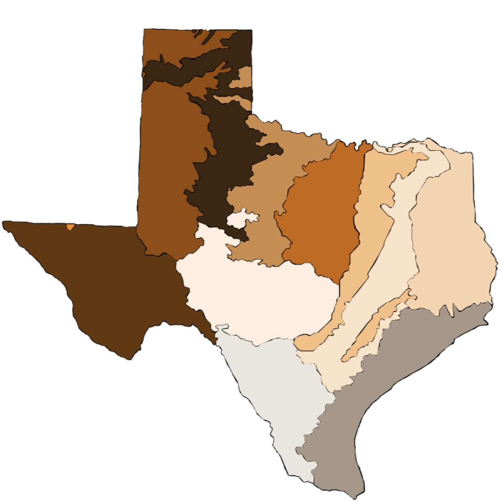

Ecoregions of Texas
Chihuahuan Deserts
Arizona/New Mexico Mountains
High Plains
Southwestern Tablelands
Central Great Plains
Cross Timbers
Texas Blackland Prairies
Edwards Plateau
Southern Texas Plains
East Central Texas Plains
South Central Plains
Western Gulf Coastal Plains
English
|
Español